How to sign in, work through a topic, and use the AI tutor — a screen-by-screen guide to the whole learning journey.
AudienceStudents
Time per topicAbout 12 minutes
You needYour student ID + a password
Screens shownCaptured from the live app
01
What this is
COMPGame flips the usual order. Instead of a lecture and then an exam, you play with an idea first in a short game, and then find out what stuck. Each of your thirteen topics is one small, self-contained unit that takes about twelve minutes, and everything you do is saved to your account as you go — so you can stop any time and pick up later, even on a different device.
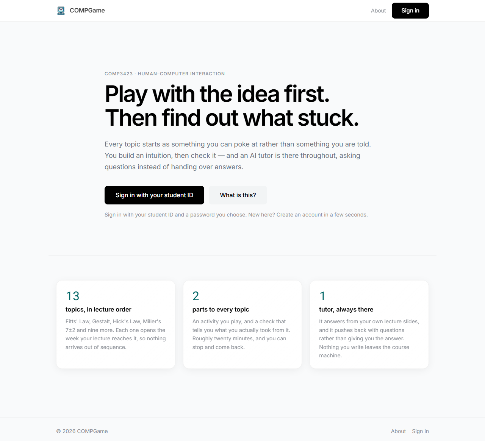
Figure 1 The welcome screen. Everything starts here — choose Sign in if you already have an account, or Create account for your first visit.
None of this affects your grade
The checks and games are there to help you learn and to help the course see whether learning-by-playing works. There are no marks riding on any of it.
02
Creating your account & signing in
Your login is your student ID and a password you choose. On your first visit, go to Create account and enter your student ID, pick a password, and — if the course has not pre-loaded a class list — choose your section (A, B or C). If the class list is already loaded, your section is filled in for you.
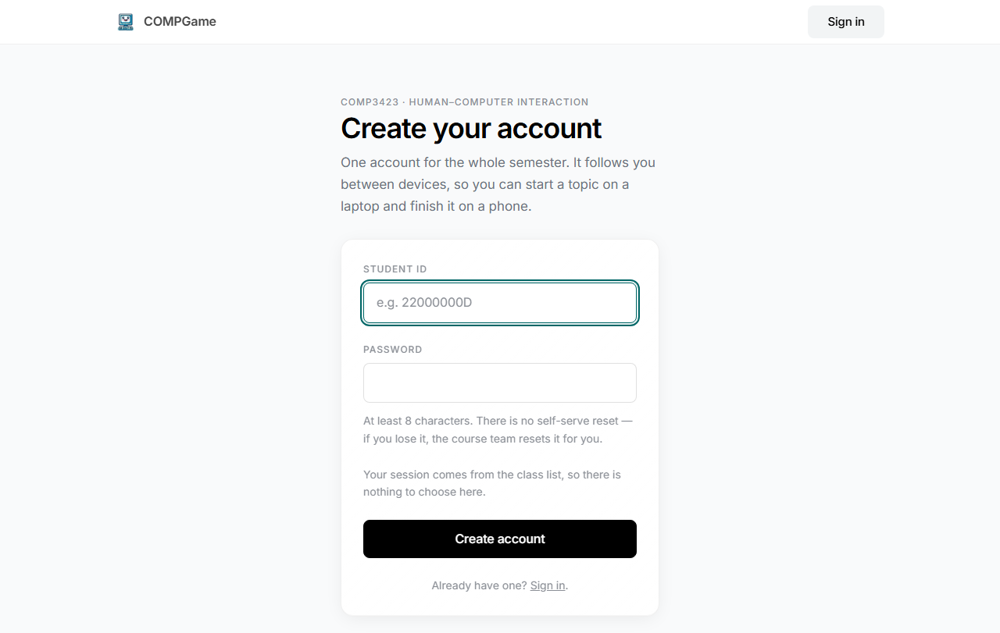
Figure 2 Creating an account. Use your real student ID — it is how your progress is kept and, later, how the course links your work together anonymously.
Keep your password
Passwords are stored one-way and cannot be looked up by anyone — not even the course team. If you forget it, a teacher can reset it for you from the course-team panel; nobody can tell you your old one.
After that first time, you just Sign in with the same student ID and password. If you ever get a single "that didn't work" message, it is deliberately vague for privacy — check the ID and password and try again.
03
Agreeing to take part
The first screen after your first sign-in is a short consent page. It explains, in plain language, what is recorded and why. Read it, tick the box, and choose Agree to continue. Taking part is voluntary — you can withdraw at any time from Account & my data, which removes your account and ends every session.
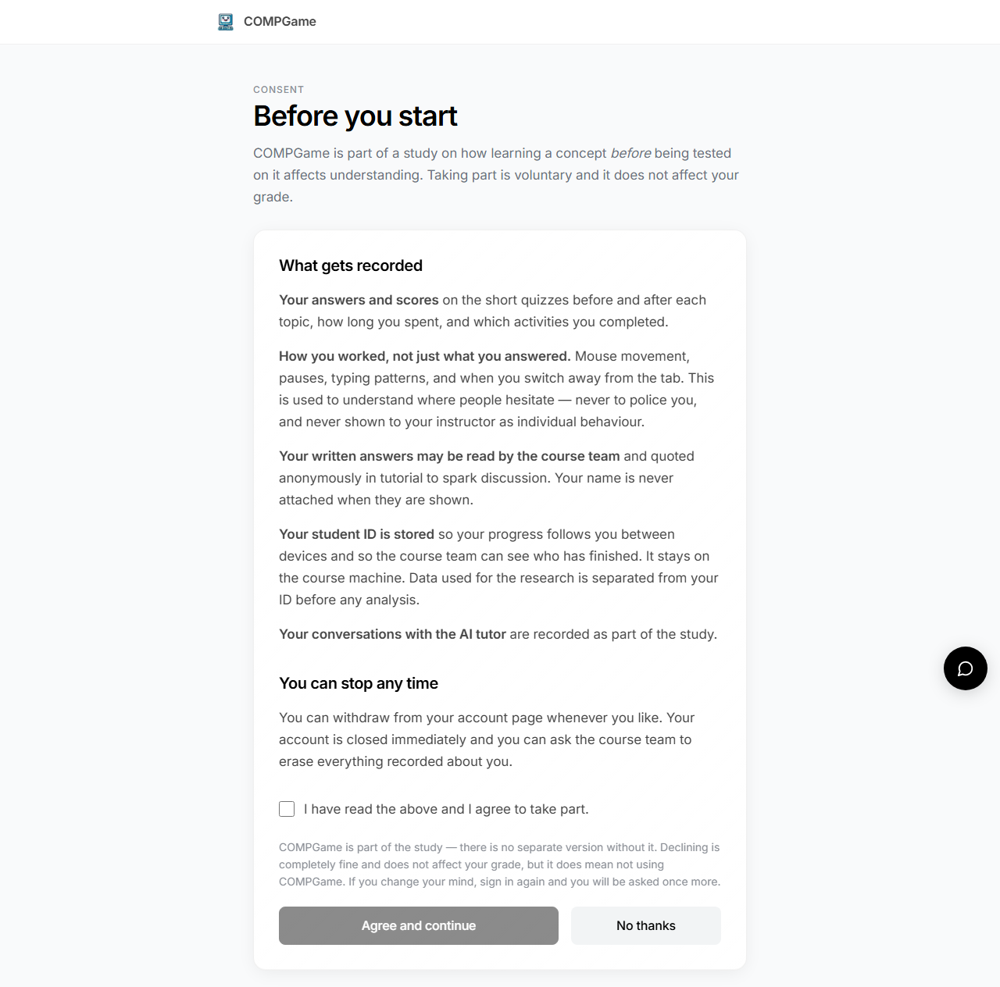
Figure 3 The consent screen. Nothing is recorded against you until you agree here.
04
Setting up — avatar, name, and a warm-up
A quick three-step setup gives your account a face and a name, and asks a short warm-up quiz. The warm-up is not graded and you are not expected to know the answers — it simply gives the course a starting point to measure against.
SET-UP 1Pick an avatarYour character across the whole journey.
SET-UP 2Choose a nameWhat the app calls you.
SET-UP 3Warm-up quizA few questions. Answer as best you can.
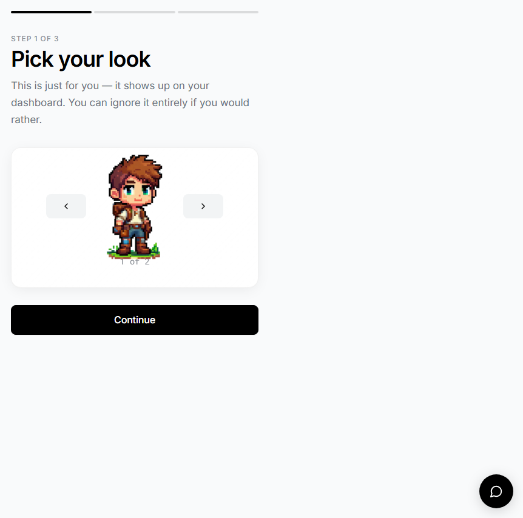
Figure 4 Choosing an avatar.
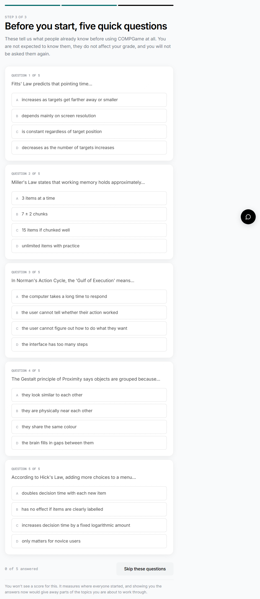
Figure 5 The warm-up quiz. Just pick the option that seems right — a guess is fine.
05
Your topics — the home screen
After setup you land on Your topics. This is your home base. Topics arrive in the order they are lectured, roughly a week before the class they belong to, so at any moment one topic is open and the rest are waiting.
Next up — the card that matters right now. It tells you the topic, roughly how long it takes, and when it closes. Press Start to begin.
The progress strip — the row of segments shows all thirteen topics and how far you have come.
How this works — a short explainer you can open any time.
The sidebar — your avatar, badges so far, and Account & my data (export or withdraw).
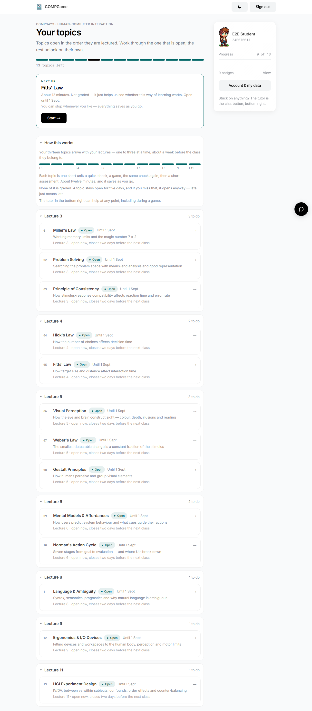
Figure 6 The topics home screen. Work through whatever is open; the rest unlock on their own as the term goes on.
The tutor is always one tap away
The dark chat button in the bottom-right corner opens the AI tutor from any screen — including in the middle of a game.
06
Inside a topic — the learning path
Opening a topic shows a short brief and then walks you through a fixed path. A small strip at the top always shows which step you are on (for example, Step 3 of 7), so you are never lost. Each step is recorded the moment you finish it, and Continue appears once it has — you do not have to declare yourself done.
STEP 1BriefWhat the topic is about.
STEP 2First checkA few questions, before you learn.
STEP 3ActivityPlay the game.
STEP 4Second checkThe same idea, new questions.
STEP 5Short answerExplain it in your words.
STEP 6TutorTalk it through.
STEP 7DoneBadge + replay.
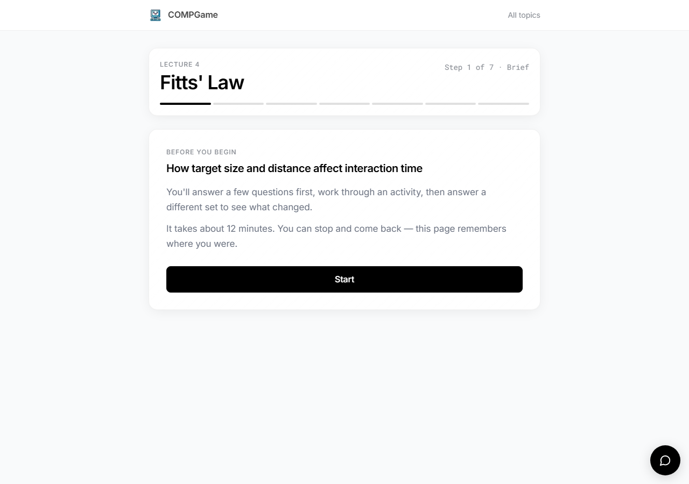
Figure 7 A topic brief. The order of the game and the checks can vary slightly between students — that is by design, and you always just follow the path in front of you.
07
The two checks
Every topic has the same short quiz twice: once before the activity and once after. You get one attempt at each, but you can change your mind freely until you press Submit.
First check — reveals nothing. No score, no right answers. That is on purpose, so the second check is a fair measure of what you learned.
Second check — reveals everything: your score, and the correct answer marked on every question.
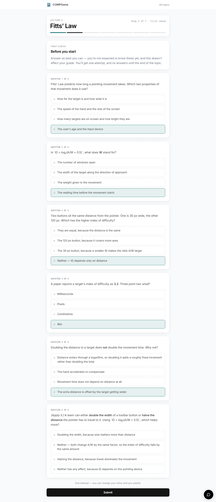
Figure 8 The first check. Select one option per question, then Submit. You will not see how you did until the very end of the topic.
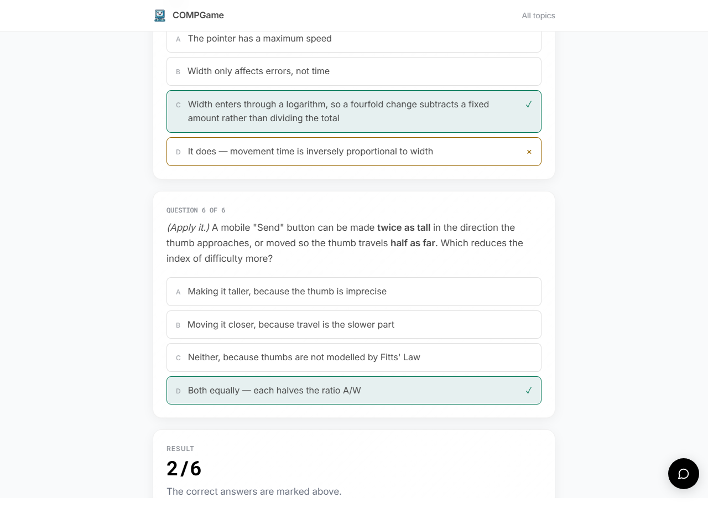
Figure 9 The second check, after submitting. A green tick marks the correct answer; a cross marks an option you picked that was wrong. Your score is at the bottom.
08
The activity — playing the game
The heart of each topic is a small game that lets you feel the idea rather than read about it. Read the short intro on the game's start screen, then play. For the best experience, use the fullscreen button in the game's bottom-right corner.
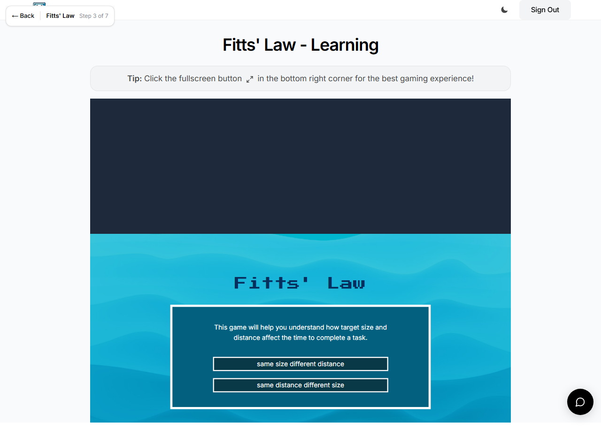
Figure 10 A game start screen. Pick a mode and play — the game shows you the concept in action.
If a game will not load or record
Games are the one place a browser can occasionally misbehave. If one genuinely will not record after you have tried it, the unit offers a small continue anyway link so you are never stuck — using it is logged, and it will not cost you anything. When the game records normally, a full Continue appears instead.
09
The AI tutor
The tutor is woven through the whole journey, not bolted on. Open it from the chat button any time — including during a game or a check — and ask it about the current topic. It teaches the Socratic way, nudging you toward the answer with questions rather than just handing it over; if you would rather see a worked example, ask it for one and it will give you it.
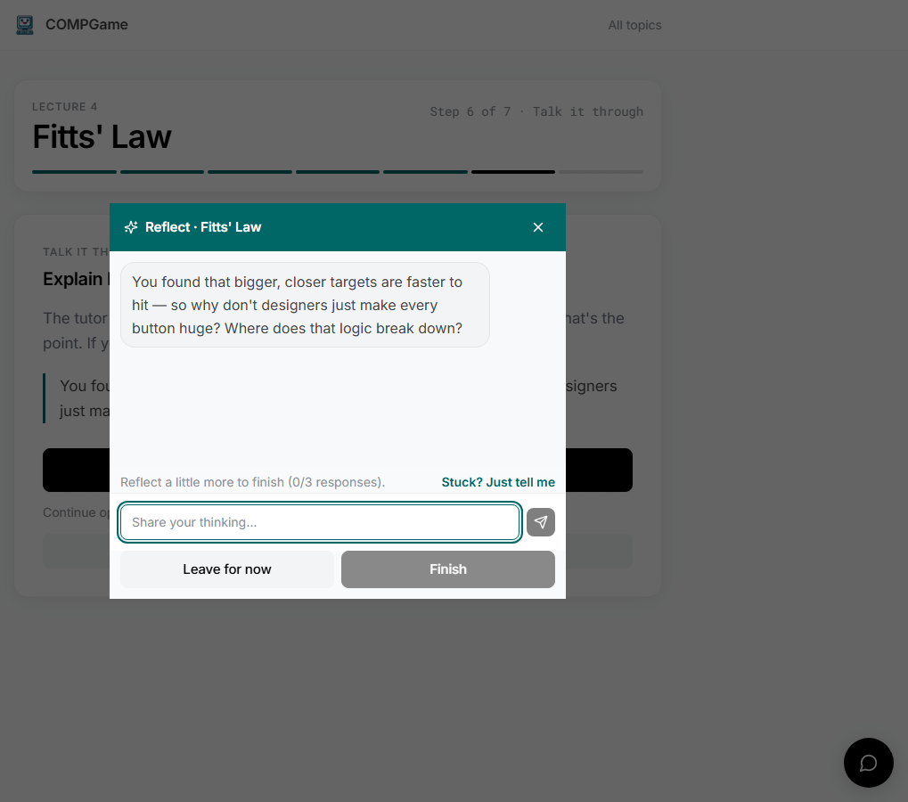
Figure 11 The tutor in conversation. It answers from the actual course material, so its help lines up with your lectures.
10
Finishing a topic
When you reach the end you get a short close screen: how your two checks compared, the badge you earned, and the chance to replay both games as free play. Then it is back to your topics, where the next one is waiting.
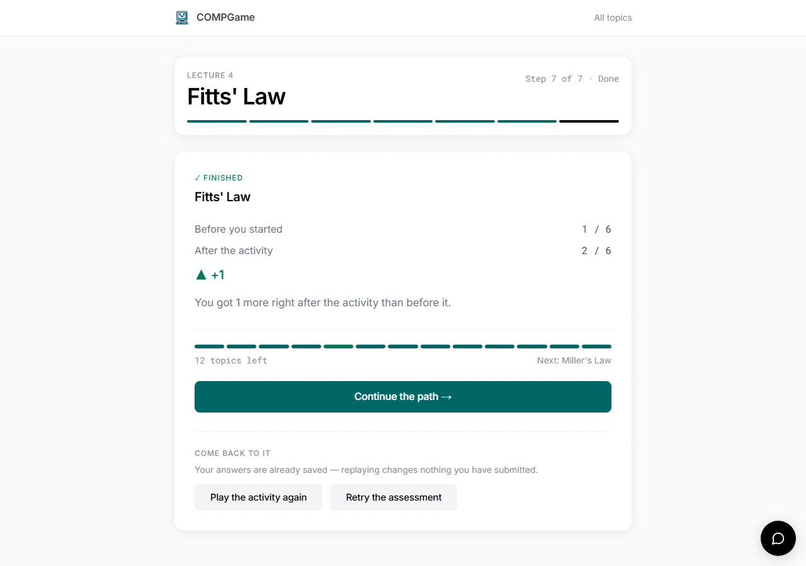
Figure 12 The close screen. Your badge records what you did, and the games stay open to play again with no pressure.
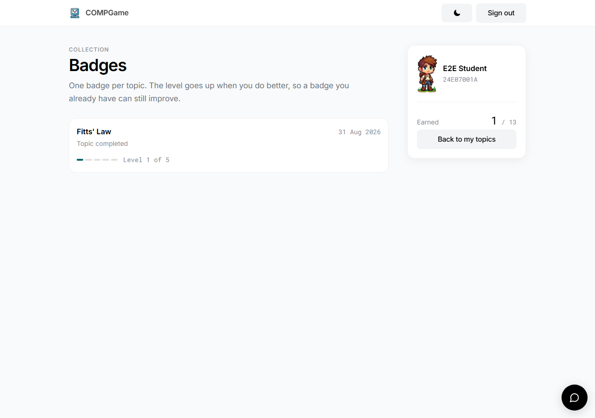
Figure 13 Your badges collect on their own page, one story per topic.
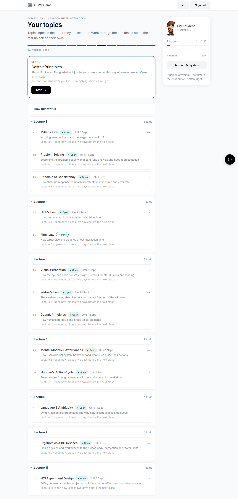
Figure 14 Back home, your progress has moved and the next topic is queued up.
11
Good to know
It saves as you go. Close the tab whenever — your place is kept on your account, not just this browser.
Any device. Sign in on a laptop today and a phone tomorrow; your progress follows you.
Signed out after 30 minutes idle. If you walk away, you will be asked to sign in again. While you are actually using the app — even typing a long answer — you stay signed in.
A topic stays open for about five days. Miss it and it opens anyway; late just means late, and nothing is graded.
Your data is yours. Export a copy or withdraw entirely from Account & my data at any time.
Stuck on anything?
The tutor (chat button, bottom-right) is the fastest help for the material itself. For anything about your account or access, ask your course team.
COMPGame · COMP3423 Human–Computer Interaction · Student User Manual · Screens captured from the live application.